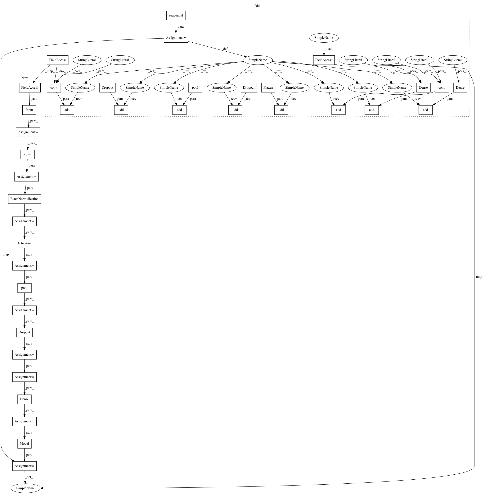

b80fb3bdcfeac64d91b7365be1196392e013dcb8,autokeras/generator.py,RandomConvClassifierGenerator,generate,#RandomConvClassifierGenerator#,80
Before Change
pool = self._get_pool_layer_func()
conv = get_conv_layer_func(len(filter_shape))
model = Sequential()
for i in range(conv_num):
kernel_num = randint(10, 30)
if i == 0:
model.add(conv(kernel_num,
input_shape=self.input_shape,
kernel_size=filter_shape,
activation="relu",
padding="same"))
else:
model.add(conv(kernel_num,
kernel_size=filter_shape,
activation="relu",
padding="same"))
if random() > 0.5:
model.add(pool(pool_size=pool_shape, padding="same"))
if random() > 0.5:
model.add(Dropout(dropout_rate))
model.add(Flatten())
for i in range(dense_num):
node_num = randint(128, 1024)
model.add(Dense(node_num, activation="relu"))
if random() > 0.5:
model.add(Dropout(dropout_rate))
model.add(Dense(self.n_classes, activation="softmax"))
model.compile(loss="categorical_crossentropy",
optimizer=Adam(),
metrics=["accuracy"])
return model
After Change
pool = self._get_pool_layer_func()
conv = get_conv_layer_func(len(filter_shape))
input_tensor = Input(shape=self.input_shape)
output_tensor = input_tensor
for i in range(conv_num):
kernel_num = randint(10, 30)
output_tensor = conv(kernel_num, filter_shape,
padding="same")(output_tensor)
output_tensor = BatchNormalization()(output_tensor)
output_tensor = Activation("relu")(output_tensor)
if random() > 0.5:
output_tensor = pool(pool_size=pool_shape, padding="same")(output_tensor)
if random() > 0.5:
output_tensor = Dropout(dropout_rate)(output_tensor)
output_tensor = Flatten()(output_tensor)
for i in range(dense_num):
node_num = randint(128, 1024)
output_tensor = Dense(node_num, activation="relu")(output_tensor)
if random() > 0.5:
output_tensor = Dropout(dropout_rate)(output_tensor)
output_tensor = Dense(self.n_classes, activation="softmax")(output_tensor)
model = Model(input_tensor, output_tensor)
model.compile(loss="categorical_crossentropy",
optimizer=Adam(),
metrics=["accuracy"])
return model
In pattern: SUPERPATTERN
Frequency: 3
Non-data size: 38
Instances
Project Name: keras-team/autokeras
Commit Name: b80fb3bdcfeac64d91b7365be1196392e013dcb8
Time: 2018-01-05
Author: jhfjhfj1@gmail.com
File Name: autokeras/generator.py
Class Name: RandomConvClassifierGenerator
Method Name: generate
Project Name: keras-team/autokeras
Commit Name: b80fb3bdcfeac64d91b7365be1196392e013dcb8
Time: 2018-01-05
Author: jhfjhfj1@gmail.com
File Name: autokeras/generator.py
Class Name: DefaultClassifierGenerator
Method Name: generate